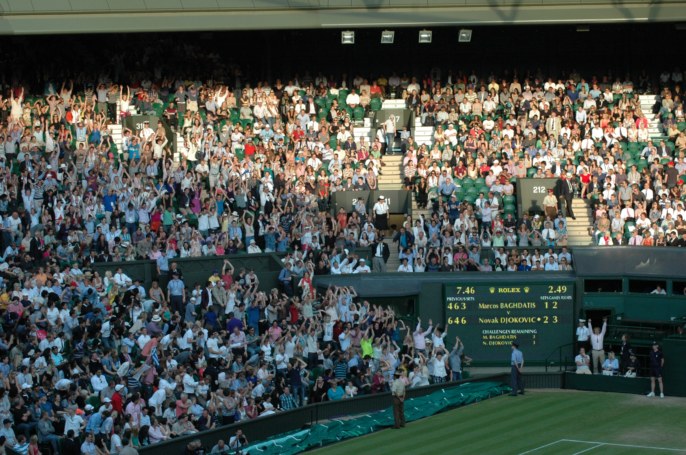

A tenisz világ legnehezebb és egyben leghíresebb tornája.
Ami nem más, mint a Wimbledoni torna.
A wimbledoni tenisztorna (hivatalos nevén: The Championships), a legrégebbi és a legtöbb hagyománnyal bíró teniszverseny a világon. Az évente megrendezett négy legrangosabb teniszverseny, a Grand Slam-tornák egyike, és történelme, valamint nagy hagyományai miatt ezek közül is Wimbledon a leghíresebb és sokak szerint a legkiemelkedőbb.

Versenyek
- Az öt fő versenyszám: férfi egyes, női egyes, férfi páros, női páros, vegyes páros.
- Junior versenyek: fiú egyes, lány egyes, fiú páros, lány páros (vegyes páros nincs)
- Négy meghívásos verseny: 35 és 45 év feletti férfiaknak egyes, 35 év feletti nőknek egyes, férfi kerekesszékes verseny
Hagyományok
Wimbledon hagyományos színei a sötétzöld és a lila. Az All England Club előírja a játékosoknak, hogy szinte teljesen fehér ruhát viseljenek. Ez volt az ok, ami miatt a fiatal Andre Agassi bojkottálta a tornát az 1990-es években. Semelyik másik Grand Slam-torna nem írja elő ilyen szigorúan a játékosok viseletét.
A wimbledoni tenisztornát hagyományosan a megelőző év férfi győztese nyitja meg a centerpályán: ő játssza az első mérkőzést.
2003-ig a versenyzőknek meg kellett hajolniuk a királyi család tagjai előtt, 2003-ban azonban Kent grófja elhatározta, hogy szakít a hagyománnyal, és a versenyzőknek csak akkor kell meghajolniuk, ha a királynő vagy a walesi herceg is jelen van.